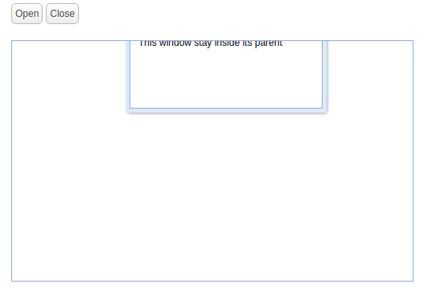

前段时间使用EasyUI的Window插件时发现生成的窗口移动范围是整个页面，不能限制在一个区域，折腾了许久才找到解决方法。
关于EasyUI的Window插件
利用EasyUI的Window插件可以方便快速地、仅利用几行代码就可以生成一个窗口（没错，就是像Windows系统里面的窗口）。EasyUI还有很多插件，具体可以看看EasyUI中文网。
EasyUI的入门与安装可以参考这篇博客，生成窗口的方法和演示可以参考这里（这个是内联的，下面要用到）。
从上面的演示中，也可以看到，窗口是会移出父节点那个框框的，甚至有这种尴尬情况：

在网上找解决办法时，找到的都是像这样的高度雷同的文章（我也不知道谁才是原文- -），但是里面的方法还是有不足的：拖拽只考虑了左方和上方；拉伸只考虑了右方和下方。于是我利用了他的方法做了一些改进：
解决方法
边上代码边说吧：
首先创建一个放窗口的区域,我把它取id为"area"，位置是绝对位置放在中间，为了可以看见这个区域，我加了边框和灰色背景色：
1
2
| <div id="area" style="position:absolute;width:600px;height:600px;left:200px;top:100px;border-style:solid;background-color:gray">
</div>
|
然后把EasyUI中文网上的窗口（内联，其实就是加个"inline:true"）代码放进去：
1
2
3
4
5
6
7
8
9
10
| <div style="margin:20px 0;">
<a href="javascript:void(0)" class="easyui-linkbutton" onclick="$('#w').window('open')">Open</a>
<a href="javascript:void(0)" class="easyui-linkbutton" onclick="$('#w').window('close')">Close</a>
</div>
<div id="area" style="position:absolute;width:600px;height:600px;left:200px;top:100px;border-style:solid;background-color:gray">
<div id="w" class="easyui-window" title="Basic Window" data-options="iconCls:'icon-save',inline:true" style="width:500px;height:200px;padding:10px;">
The window content.
</div>
</div>
|
这样生成的窗口和网站上的演示一样，不能限制在那个区域内。于是下面是script：
1
2
3
4
5
6
7
8
9
10
11
12
13
14
15
16
17
18
19
20
21
22
23
24
25
26
27
28
29
30
31
32
33
34
35
36
37
38
39
40
41
42
43
44
45
46
47
48
49
50
51
52
53
54
55
56
57
58
59
60
61
62
63
64
65
66
67
68
69
| $(document).ready(function() { //页面（包括图像）已经完全呈现时，会发生 ready 事件
var moving = false; //用来标志用户是否在拖动窗口，原因是onResize与onMove会互作
$("#w").window({
//拖动时
onMove:function(left,top){ //onMove事件，用户拖动时触发
moving = true; //标志正在拖动
var w=$("#area").width(); //限制区域的宽度
var h=$("#area").height(); //限制区域的高度
var width=$("#w").window("options").width; //窗口宽度
var height=$("#w").window("options").height; //窗口高度
//如果窗口上端超出限制区域上端（因为是内联，所以是0）
if(top<0){
$("#w").window("resize",{top:0});
//把窗口上端限制在区域上端
}
//如果窗口下端超出限制区域下端（height+top就是bottom了）
if((height+top)>h){
$("#w").window("resize",{top:h-height});
//把窗口下端限制在区域下端
}
//如果窗口左端超出限制区域左端（因为是内联，所以是0）
if(left<0){
$("#w").window("resize",{left:0});
//把窗口左端限制在区域左端
}
//如果窗口右端超出限制区域右端（width+left就是right了）
if((width+left)>w){
$("#w").window("resize",{left:w-width});
//把窗口右端限制在区域右端
}
moving = false; //完成，标志为没有在拖动
},
//拉伸时
onResize:function(width, height){ //onResize事件
if(moving){return;}
//有时候拖动时会触发onResize（比如拖到左上角，左边和上边同时越界时）
//所以如果在拖动的话直接跳过onResize
var w=$("#area").width(); //限制区域的宽度
var h=$("#area").height(); //限制区域的高度
var left=$("#w").window("options").left; //窗口左端
var top=$("#w").window("options").top; //窗口顶端
if(top<0){ //如果窗口上端超出限制区域上端（因为是内联，所以是0）
$("#w").window("resize",{height:height+top,top:0});
//把窗口上端限制在区域上端，同时保持高度不变（这时top是负值，且绝对值为超出的长度）
}
//如果窗口下端超出限制区域下端
if((height+top)>h){
$("#w").window("resize",{height:h-top});
//因为拉伸下面时top没改变，所以直接保持高度不变就行了（height的计算就是if表达式里面的变形）
}
//如果窗口左端超出限制区域左端
if(left<0){
$("#w").window("resize",{width:width+left,left:0});
//把窗口左端限制在区域左端，同时保持宽度不变（这时left是负值，且绝对值为超出的长度）
}
//如果窗口右端超出限制区域右端
if((width+left)>w){
$("#w").window("resize",{width:w-left});
//因为拉伸右面时left没改变，所以直接保持宽度不变就行了
}
}
});
});
|
一不小心就把代码打全了，注释虽然有点密密麻麻，但应该看得懂的。
最后发一个演示：☞戳我☜